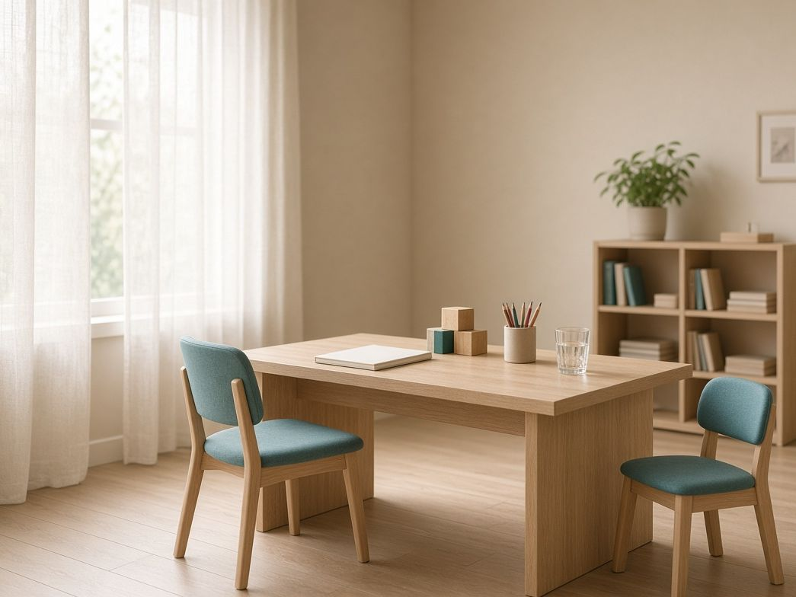
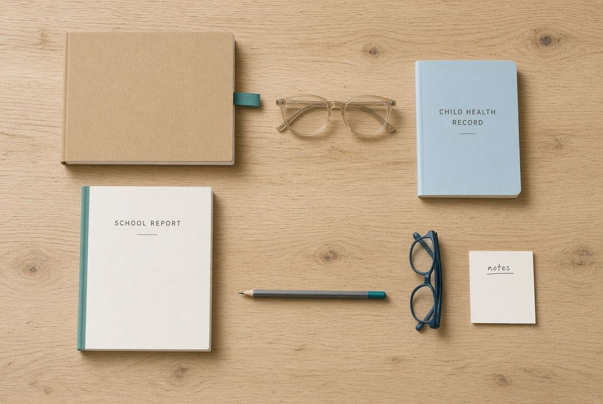
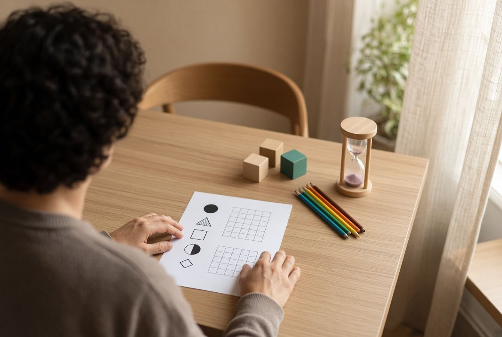
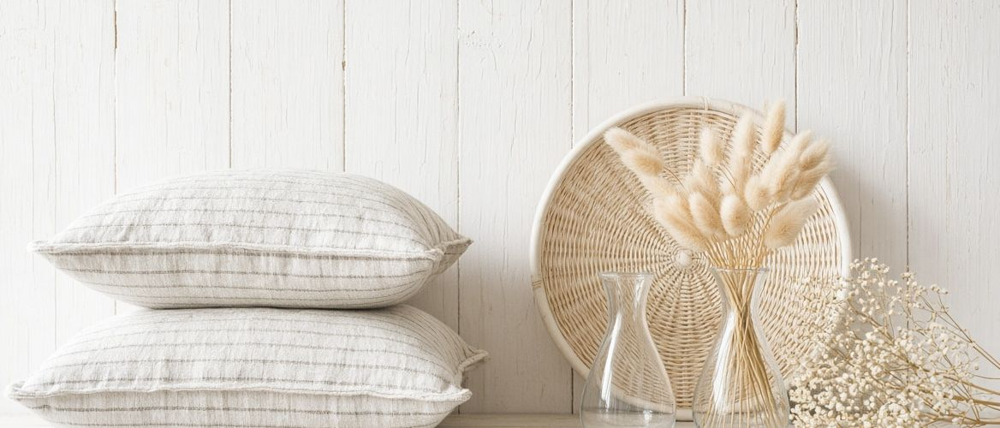
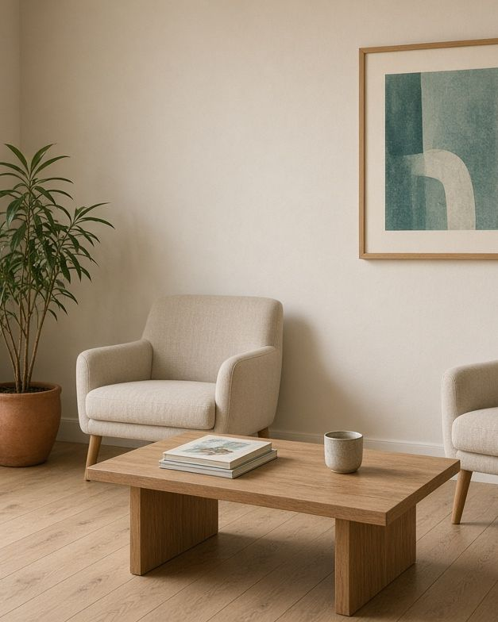
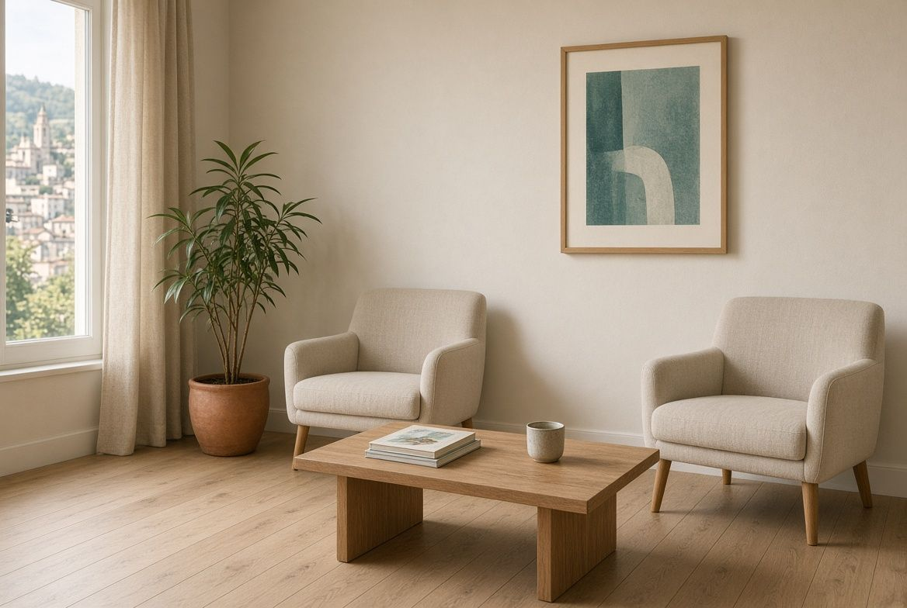
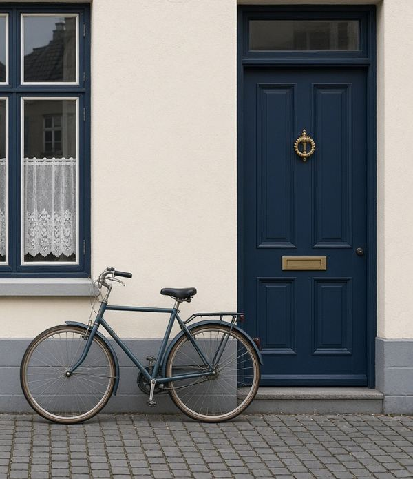
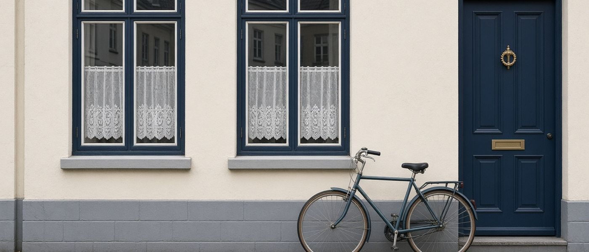

Comprendre commentvous fonctionnez, pour avancer.
Psychologue spécialisée en neuropsychologie, je propose des évaluations du fonctionnement cognitif, notamment dans le cadre des troubles du développement et des troubles des apprentissages, et, si besoin, des séances de remédiation cognitive.
Ce que révèle un bilan
Exemples de profils, à titre d'illustrationTrois profils fictifs pour montrer qu'il n'y a pas un seul "bon" profil. Ils ne représentent aucune personne réelle et ne remplacent pas une évaluation.
Trois portes, selon ce que vous cherchez.
Vous vous posez une question sur un enfant, un adolescent ou vous-même ? Voici le chemin le plus court vers ce qui vous concerne.
Comprendre les bilans
Ce qui est évalué, comment se déroulent les séances, ce que vous recevez à la fin, et pour qui.
Les bilans neuropsychologiques →Connaître les tarifs
Une grille claire, tout compris, et un petit outil pour savoir quel bilan correspond à votre situation.
Tarifs et remboursement →Prendre rendez-vous
Un premier échange par téléphone ou par mail, pour vérifier que le bilan est indiqué et fixer l'entretien initial.
Me contacter →Trouvez votre chemin en trois questions.
Pour qui, où vous en êtes, ce que vous cherchez. Trente secondes, et je vous emmène directement à la page qui vous concerne, avec une première orientation.
Trois temps, à votre rythme.
Un bilan se déroule en plusieurs rendez-vous. La durée des séances d'évaluation dépend de la problématique et de l'âge.
L'entretien initial
Avec l'enfant, l'adolescent, les parents et/ou l'adulte, selon la situation.
Environ 1 hLes séances d'évaluation
Tests et questionnaires, en une à trois séances selon la problématique et l'âge.
2 à 5 h au totalLe compte-rendu
Explication orale des résultats et recommandations, puis un compte-rendu écrit remis.
Environ 1 h
Une formation clinique, en France et au Canada.
Master 2 en neuropsychologie clinique à Chambéry, doctorat à l'université de Montréal, plusieurs années au Centre d'évaluation et de réadaptation cognitive de Montréal et Laval, puis l'installation en libéral au Pays basque. Une expérience auprès de personnes de 2 ans à plus de 70 ans, aux profils variés.
Parlons de votre situation.
Un premier échange par téléphone ou par mail permet de vérifier que le bilan est indiqué, et de fixer l'entretien initial.
Demander un rendez-vousL'évaluation porte sur les capacités intellectuelles et cognitives. L'objectif est de mieux comprendre le fonctionnement de la personne, en lien avec son comportement et les difficultés qu'elle ressent au quotidien.
À chaque âge, ses questions.
J'interviens auprès des enfants et adolescents et de leurs familles, ainsi qu'auprès des adultes. Voici, sans être exhaustif, les motifs qui amènent le plus souvent à consulter.
Six domaines, un profil.
Fonctionnement intellectuel, attention et concentration, fonctions exécutives, mémoire, cognition sociale, et d'autres sphères selon la question posée.
Le point de départ d'un bilan complet : raisonnement, compréhension, vitesse de traitement.
Maintenir son attention, résister aux distractions, faire deux choses à la fois.
Planifier, s'organiser, s'adapter, inhiber une réponse automatique.
Retenir, apprendre, retrouver une information, à court et à long terme.
Comprendre les émotions, les intentions et les situations sociales.
Langage, praxies, fonctions visuo-spatiales, selon la problématique.
Trois temps, à votre rythme.
Un bilan se déroule en plusieurs rendez-vous. La durée des séances d'évaluation dépend de la problématique et de l'âge.
L'entretien initial
Avec l'enfant, l'adolescent, les parents et/ou l'adulte, selon la situation. On fait le point sur l'histoire, les difficultés et les attentes.
Environ 1 hLes séances d'évaluation
Tests et questionnaires, dans un cadre calme et adapté à l'âge. Une à trois séances selon la problématique.
2 à 5 h au totalLe compte-rendu oral
Explication des résultats, réponses à vos questions et proposition de recommandations concrètes.
Environ 1 hCe qui aide, le jour de l'entretien.
Rien d'obligatoire, mais ces documents rendent l'entretien initial plus précis. Cochez au fur et à mesure.
Liste à valider par la praticienne.

- ✓Les comptes-rendus de bilans précédents, s'il y en a (QI, orthophonie, psychomotricité…)
- ✓Les derniers bulletins scolaires ou remarques de l'école
- ✓Le carnet de santé pour un enfant, ou les courriers médicaux utiles
- ✓Les lunettes ou l'appareil auditif, si la personne en porte
- ✓Vos questions, notées à l'avance
Avant de prendre rendez-vous.
Un entretien initial d'environ une heure, puis deux à cinq heures d'évaluation réparties sur une à trois séances selon l'âge et la problématique, et un compte-rendu oral d'environ une heure. Un compte-rendu écrit vous est ensuite remis.
L'évaluation du fonctionnement intellectuel constitue le point de départ essentiel d'un bilan neuropsychologique complet. Elle n'est pas refaite si elle a été réalisée dans les deux dernières années.
Les consultations en neuropsychologie ne sont pas prises en charge par la Sécurité sociale. Certaines mutuelles remboursent quelques séances : renseignez-vous auprès de la vôtre, une facture vous est remise.
Au cabinet Landa Gaita, 109 chemin d'Ostalapea à Ahetze, au cœur du Pays basque : 15 minutes de Saint-Jean-de-Luz, 10 minutes de Bidart et de Saint-Pée-sur-Nivelle, 20 minutes de Biarritz.
Parlons de votre situation.
Un premier échange par téléphone ou par mail permet de vérifier que le bilan est indiqué, et de fixer l'entretien initial.
Demander un rendez-vousSi besoin, à la suite d'un bilan, je propose des séances de remédiation cognitive : un travail régulier et personnalisé sur les fonctions concernées, avec des exercices et des stratégies à réutiliser au quotidien.

Après le bilan, un programme sur mesure.
Le bilan a identifié les fonctions fragiles et les points d'appui. La remédiation s'appuie sur les deux : elle entraîne ce qui peut progresser et apprend à compenser le reste, avec des stratégies concrètes pour l'école, le travail ou la maison.
Les séances durent trente minutes ou une heure, selon l'âge et la fatigabilité. Le rythme se décide ensemble.
Quatre familles de fonctions.
À titre d'exemple, les fonctions le plus souvent travaillées en séance. Le contenu réel dépend toujours du bilan.
Maintenir, sélectionner, partager son attention. Tenir dans la durée.
Stratégies d'encodage et de récupération, aides externes.
Planifier, anticiper, découper une tâche, gérer le temps.
Inhiber l'impulsivité, s'adapter, gérer la fatigue et la frustration.
Ces animations illustrent le type d'exercice, elles ne représentent aucun patient.
Parlons de votre situation.
Un premier échange par téléphone ou par mail permet de vérifier que le bilan est indiqué, et de fixer l'entretien initial.
Demander un rendez-vousLes tarifs des bilans comprennent l'ensemble des séances, ainsi que les temps de cotation et de rédaction du compte-rendu. Règlement par chèque, espèces ou virement.
- Bilan du fonctionnement intellectuel (QI)Le socle de toute évaluation300 €
- Bilan attentionnel et exécutifSi un QI a été réalisé dans les deux dernières années300 €
- Bilan QI + attentionnel et exécutifLe bilan complet le plus fréquent400 €
- Bilan QI + attentionnel et exécutif + une autre sphèreMémoire, cognition sociale, langage, selon la question450 à 500 €
- Remédiation cognitive30 minutes ou une heure40 € ou 60 €
Quel bilan pour votre situation ?
Deux questions pour vous repérer dans la grille. La ligne correspondante se surligne. L'orientation définitive se fait lors de l'entretien initial.
Le résultat s'affiche ici.

L'objectif est de mieux comprendre le fonctionnement de la personne, en lien avec les difficultés qu'elle ressent au quotidien.Extrait du site actuel
Ce qu'il faut savoir.
Parlons de votre situation.
Un premier échange par téléphone ou par mail permet de vérifier que le bilan est indiqué, et de fixer l'entretien initial.
Demander un rendez-vousPsychologue spécialisée en neuropsychologie, je vous accueille au cabinet Landa Gaita, à Ahetze, au cœur du Pays basque.

Bordeaux, Chambéry, Montréal, puis le Pays basque.
J'ai effectué mes études universitaires à l'université de Bordeaux, avant d'obtenir le Master 2 professionnel en neuropsychologie clinique à l'université de Chambéry, puis un doctorat en neuropsychologie clinique à l'université de Montréal.
Durant mes études, j'ai réalisé plusieurs stages dans des milieux variés : institut médico-éducatif, centre de consultations mémoire, clinique d'intervention pour les troubles anxieux, clinique d'évaluation des troubles du spectre de l'autisme, clinique privée. J'ai ensuite travaillé plusieurs années au Centre d'évaluation et de réadaptation cognitive à Montréal et Laval, avant de revenir en France m'installer en pratique libérale, à Ciboure puis à Ahetze.
- Université de BordeauxÉtudes universitaires en psychologie
- Université de ChambéryMaster 2 professionnel en neuropsychologie clinique
- Université de MontréalDoctorat en neuropsychologie clinique
- Centre d'évaluation et de réadaptation cognitiveMontréal et Laval, plusieurs années de pratique
- Ciboure, puis AhetzePratique libérale au Pays basque
Carte stylisée, le trajet se dessine au défilement.
Trois principes.
Un bilan sert d'abord à expliquer ce qui se passe, pas à coller une étiquette. Le profil de forces et de faiblesses est toujours mis en lien avec le quotidien.
Un enfant de trois ans, un lycéen et une personne de soixante-dix ans ne se rencontrent pas de la même manière. Le cadre, le rythme et les outils s'adaptent.
Avec votre accord, le compte-rendu peut être partagé avec l'école, le médecin, l'orthophoniste ou les autres professionnels qui vous accompagnent.
Formulations proposées, à relire et ajuster par la praticienne.

Landa Gaita, au cœur du Pays basque.
Je vous accueille au 109 chemin d'Ostalapea, à Ahetze. Au sein du cabinet, vous trouverez également une orthophoniste et une thérapeute, ce qui facilite les échanges lorsqu'un accompagnement à plusieurs est utile.
Parlons de votre situation.
Un premier échange par téléphone ou par mail permet de vérifier que le bilan est indiqué, et de fixer l'entretien initial.
Demander un rendez-vousUn premier échange par téléphone ou par mail permet de vérifier que le bilan est indiqué, et de fixer l'entretien initial. Je vous réponds personnellement.
Demander un rendez-vous
Trois étapes, deux minutes. Rien n'est engagé avant notre premier échange.
Demande envoyée
Merci. Je vous rappelle prochainement pour un premier échange.

Cabinet Landa Gaita109 chemin d'Ostalapea, 64210 Ahetze

Cabinet Landa GaitaImage provisoire pour la maquette : la vraie façade sera photographiée pour que les patients reconnaissent l'entrée.